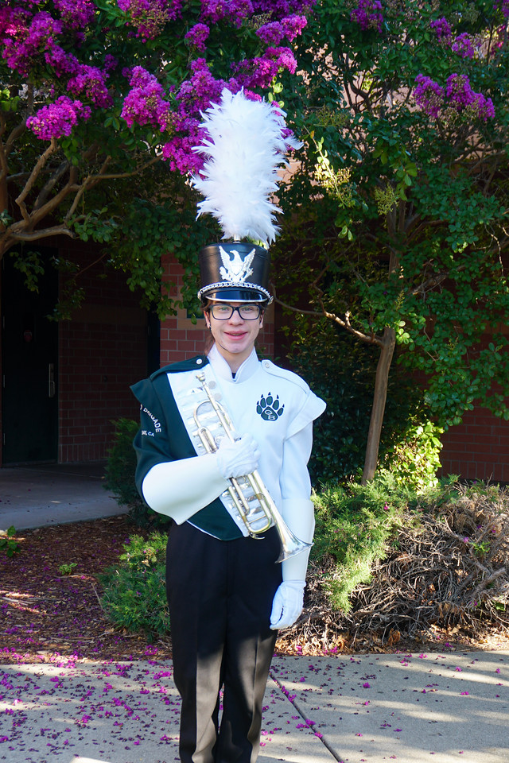

About
I am ***DEADNAME*** Robillard. I graduated from Granite Bay High School in 2020. I earned an Associate in Science for Transfer in Mathematics and an Associate of Science in Natural Science from Sierra College in 2022. I am currently a student at UC Davis where I am persuing a major in computer science. I enjoy programming and computer science and you will find some of my projects on this website. I am a musician and have been playing trumpet since 2011. I am also a Notary Public in the state of California.
Contact
You can contact me via email: larobitrumpet@***DEADNAME***robillard.xyz
If you have a ProtonMail account and want to use that, you can email: larobitrumpet@protonmail.com
My GitHub can be found here: github.com/larobitrumpet
My public GPG key can be found here: GPG key.
You can run this command to automatically download my GPG key and add it to your keyring:
curl -L https://***DEADNAME***robillard.xyz/pubkey.txt | gpg --import